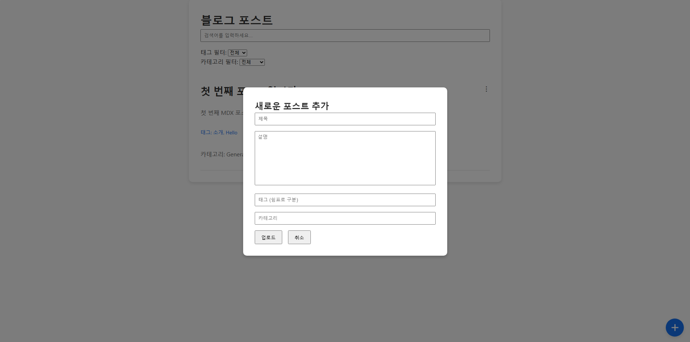
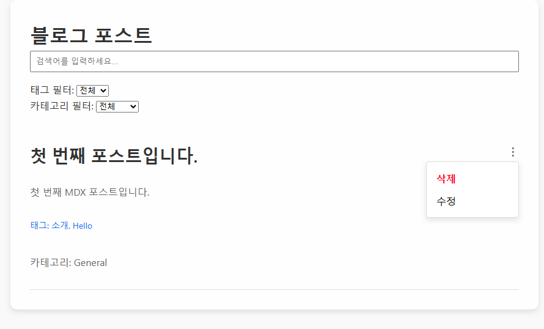
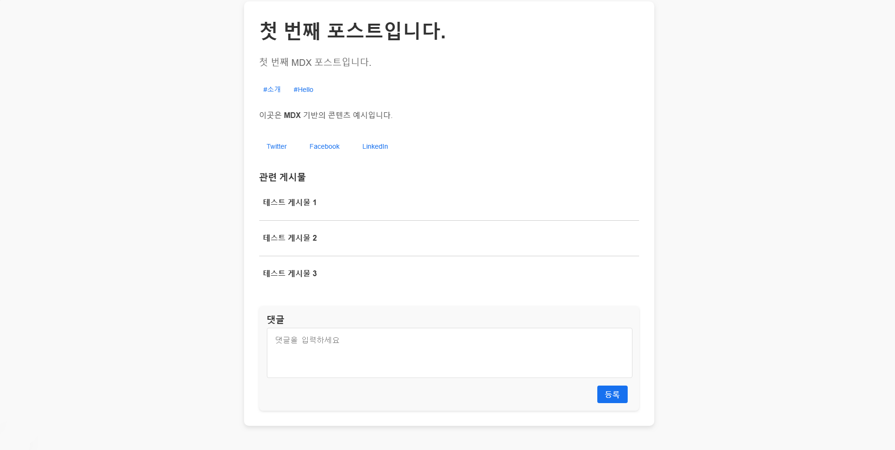

블로그 포스트 프로젝트
기간: 2025.03.04 ~ 2025.03.10
제작 구성원: 1명
설명: 본 프로젝트는 사용자가 자유롭게 글을 작성하고, 댓글 및 태그 기능을 통해 서로 소통할 수 있는 웹 기반 블로그 플랫폼입니다. 심플하면서 직관적인 사용자 인터페이스를 제공하며, 검색과 카테고리 분류 기능을 통해 관심 있는 콘텐츠를 쉽게 찾아볼 수 있도록 설계되었습니다.
사용 기술: HTML5, CSS3, JavaScript, Node.js, Express, MongoDB
포트폴리오: github 링크, 블로그 프로젝트 링크
프로젝트 상세 설명 및 기능
  - 게시글 작성, 수정, 삭제 기능
- 댓글 작성 및 답글 기능
- 태그 및 카테고리 분류를 통한 콘텐츠 관리
- 반응형 디자인 적용으로 다양한 기기 지원
- 검색 기능을 통한 빠른 콘텐츠 접근
이 블로그 플랫폼은 개발 초기 사용자들의 의견을 반영하여, 누구나 쉽게 콘텐츠를 공유하고 소통할 수 있는 커뮤니티 공간을 목표로 제작되었습니다.